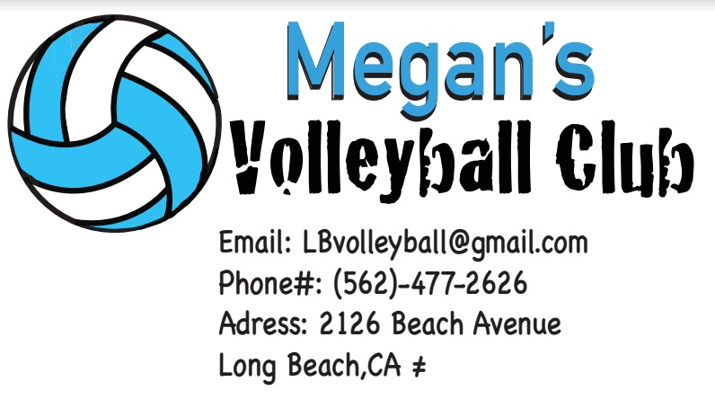

ATM is a three year computer program at Bancroft Middle School. In this program, students are taught how to use many programs and be able to experience and learn a whole lot of interesting information. Learn more about it
here.
In seventh grade I learned a lot of fun and interesting things in ATM in seventh grade. For example I learned how to edit photos in Adobe Photoshop, make a business card and logo in Adobe Illustrator, create a magazine cover, build a house and furniture in SketchUp, and create an online floor plan in Floorplanner.

I made this in Illustrator, I made it about volleyball because I enjoy playing that sport.
I created this in photoshop, we were doing a tutorial and I chose to do this one. I liked how this turned out.
8th Grade
So far in 8th grade for ATM I have learned how to code. I learned from programs such as DASH and Khan Academy. We also used studio code too.
I created this video in ATM about how my dream is to stop animal abuse from happening. With Ms.Milton's help I became sucessful with this video and learned more about film.
I created this towats the end of the first semester in ATM with Ms.Milton. We had to create the audio for a silent cartoon in GarageBand.
Reflection
Overall I have really learned a lot in ATM and it has been very helpful to me in other classes. The programs that i've learned so far have been interesting and i'd like to learn more and create more in the different programs. It has helped me get my work done faster while type essays and other assignments on the computer so I can type it faster and have more time to reread and check it instead of having to worry about pressing the right keys. Also with the technology improving year after year, this is a good program to learn and explore some of the wonders of the internet.
 Ilya Pavlov
Ilya Pavlov